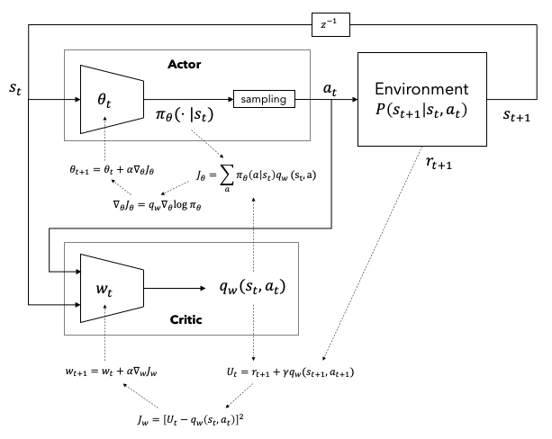
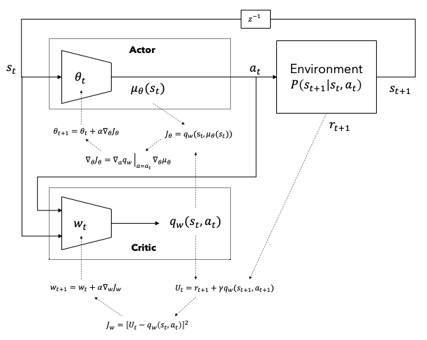

강화학습에서 가치함수법에 대한 연구가 활발히 진행되어 왔으나 가치함수 변화에 대하여 정책의 변화가 급격하다는 문제와 연속행동공간에서는 매 스텝마다 함수최적화를 풀어야 하는 문제1로 인하여 정책을 직접 구하는 정책경사법(policy-gradient methods){Sutton.2000}이 고안되었다.
가치함수법으로 만든 에이전트는 각 행동의 가치들을 산출하고 이로부터 하나의 행동을 선택하는 반면 정책경사법의 에이전트는 행동의 확률분포를 계산한 후 이로부터 하나의 행동을 샘플링한다.
a_t=\argmax\limits_a Q_\pi(s,a)\tag{가치함수법}
a_t\sim\pi(a_t|s_t)\tag{정책경사법}
본 장에서는 정책경사법의 이론적 배경과 다양한 알고리즘을 살펴본다.
1 이산행동공간을 다루는 실제 강화학습에서는 Q_\pi(a_t|s_t)를 \bold{Q}_\pi(s_t) 형태로 변형하여 모든 행동에 대한 확률분포를 벡터형태로 한 번에 받을 수 있다. 하지만 연속행동공간인 경우 상태와 행동을 입력하면 그에 대한 가치를 얻는 Q_\pi(s_t,a_t)의 형태로 구성할 수 밖에 없다. 이러한 경우 \argmax_{a}Q_\pi(s_t,a)를 구하기 위하여 함수최적화 문제를 풀어야 한다.
정책경사법에서는 정책 \pi(a|s)가 에이전트의 출력이자 에이전트 그 자체를 나타낸다. 정책경사법의 에이전트는 주로 대형 스케일의 문제나 연속공간문제에서 활용되기 때문에 환경모델의 상태 개수보다 훨씬 적은 수의 파라미터 \theta\ll|S|를 갖는 근사함수 \pi_\theta(a|s)로 구현되어있다고 가정한다.
\pi_\theta(a|s)=\pi(a|s,\bold{\theta})=Pr(A_t=a|S_t=s,\bold{\theta}_t=\bold{\theta})
에피소딕 과정인 경우 정책을 향상시키기 위한 목적함수(objective function) J(\bold{\theta})로 정책 \pi_\theta가 주어졌을 때 초기상태의 가치인 v_\pi(s_0)을 사용할 수 있다.2 초기상태의 가치는 초기상태부터 종료상태까지 받는 모든 보상의 합의 기대값이므로 적절한 성능지표(performance measure)라고 할 수 있다.
J(\bold{\theta})\doteq v_\pi(s_0)
정책의 파라미터에 대한 목적함수를 미분하여 얻은 경사(gradient)를 이용하여 반복적으로 파라미터를 업데이트하면 최적의 정책을 찾을 수 있을 것이다.
\bold{\theta}_{t+1}=\bold{\theta}_t+\alpha\nabla_{\bold{\theta}}J(\bold{\theta}_t)\tag{1}
목적함수가 기대값이기 때문에 경사를 엄밀히 계산하기 위해서는 무한히 많은 에피소드가 필요하다. 이는 현실적으로 불가능한 일이기 때문에 그 기대값이 경사를 근사하는 추정량(estimator)을 사용한다. 이러한 추정량을 찾기 위해 정책경사이론(policy-gradient theorem)인 식 (2){Sutton.2000}를 이용할 수 있다.
\begin{aligned}
\nabla_{\bold{\theta}}J(\bold{\theta})&\propto\sum\limits_s\rho_\pi(s)\sum\limits_a q_\pi(s,a)\nabla_{\bold{\theta}}\pi_{\theta}(a|s) \\
&=\mathbb{E}_\pi\left[\sum\limits_a q_\pi(S_t,a)\nabla_{\bold{\theta}}\pi_{\theta}(a|S_t)\right]\tag{2}
\end{aligned}식 (2)에서 \rho_\pi(s)는 정책 \pi_\theta에 대한 정상상태분포(stationary state distribution)를 의미하며 \mathbb{E}_\pi3는 정책 \pi_{\theta}를 따르며 얻은 경로에 대한 기대값을 의미한다. 식 (2)에 약간의 트릭을 쓰면 식 (3)을 얻을 수 있다.
\begin{aligned}
\nabla_{\bold{\theta}}J(\bold{\theta})&=\mathbb{E}_\pi\left[\sum\limits_a q_\pi(S_t,a)\nabla_{\bold{\theta}}\pi_{\theta}(a|S_t)\right] \\
&=\mathbb{E}_\pi\left[\sum\limits_a \pi_{\theta}(a|S_t) q_\pi(S_t,a)\frac{\nabla_{\bold{\theta}}\pi_{\theta}(a|S_t)}{\pi_{\theta}(a|S_t)}\right] \\
&=\mathbb{E}_\pi\left[q_\pi(S_t,A_t)\frac{\nabla_{\bold{\theta}}\pi_{\theta}(A_t|S_t)}{\pi_{\theta}(A_t|S_t)}\right] \\
&=\mathbb{E}_\pi\left[q_\pi(S_t,A_t)\nabla_{\bold{\theta}}\log\pi_{\theta}(A_t|S_t)\right] \\
\tag{3}
\end{aligned}결국 q_\pi(s,a)\nabla_{\bold{\theta}}\log\pi_{\theta}(a|s)를 \nabla_{\bold{\theta}}J(\bold{\theta})의 추정량으로 사용할 수 있다. 즉, 에피소드 경로 샘플로부터 q_\pi(s,a)\nabla_{\bold{\theta}}\log\pi_{\theta}(a|s)를 계산한 값으로 성능지표의 경사를 확률론적(stochastic)으로 구할 수 있으며 식 (1)을 반복함으로써 최적정책의 파라미터를 구할 수 있다.
2 v_\pi(s_0)=v_{\pi_{\theta}}(s_0)
3 \mathbb{E}_\pi=\mathbb{E}_{\pi_{\theta}}
정책은 확률분포이므로 그 합은 1이며 미분하면 0이 된다. 따라서 정책경사에 임의의 상태함수 b(s)를 곱하더라도 0이 된다. b(s)를 기준함수(baseline function)라고 한다.
\begin{aligned}
\sum\limits_a b(s)\nabla_{\bold{\theta}}\pi_{\theta}(a|s)
&=b(s)\nabla_{\bold{\theta}}\sum\limits_a\pi_{\theta}(a|s) \\
&=b(s)\nabla_{\bold{\theta}}1 \\
&= 0\tag{4}
\end{aligned}식 (2), (3)와 (4)로부터 식 (5)를 얻을 수 있다. 기준함수를 사용하면 가치함수의 분산을 줄여 정책경사법을 안정화시켜준다.
\begin{aligned}
\nabla_{\bold{\theta}}J(\bold{\theta})
&\propto\sum\limits_s\rho_\pi(s)\sum\limits_a \{q_\pi(s,a)-b(s)\}\nabla_{\bold{\theta}}\pi_{\theta}(a|s) \\
&=\mathbb{E}_\pi\left[\{q_\pi(s,a)-b(s)\}\nabla_{\bold{\theta}}\log\pi_{\theta}(A_t|S_t)\right]\tag{5} \\
\end{aligned}기준함수로 상태가치함수 v_\pi(s)를 사용하면 q_\pi(s,a)-b(s)가 어드밴티지 A_\pi(s,a)가 된다.
\begin{aligned}
\nabla_{\bold{\theta}}J(\bold{\theta})
&=\mathbb{E}_\pi\left[A_\pi(s,a)\nabla_{\bold{\theta}}\log\pi_{\theta}(A_t|S_t)\right]\tag{6} \\
\end{aligned}식 (3) 또는 (5)를 이용하여 최적정책을 찾으려면 가치함수를 알아야 한다. {Sutton.1983}은 정책과 가치를 계산하는 두 개의 모델을 사용하여 정책경사를 추정하는 방법을 제시하였다. 정책을 계산하는 모델을 행동가(actor), 가치를 계산하는 모델을 비평가(critic)이라고 하며 두 모델을 사용하는 강화학습 알고리즘을 행동가-비평가(Actor-Critic, AC) 알고리즘이라고 한다. 비평가 모델을 \Psi_t라고 한다면 식 (7)의 일반화된 AC 알고리즘을 얻을 수 있다.{Schulman.2016} 식 (7)에서 g는 성능지표의 미분이며 상태공간에 대한 기대값을 시간에 대한 기대값으로 변환하였다.
\begin{aligned}
g&\doteq\mathbb{E}_\pi\left[\sum\limits_{t=0}^\infty\Psi_t\nabla_{\bold{\theta}}\log\pi_{\theta}(a_t|s_t)\right]\tag{7} \\
\end{aligned}비평가 모델 \Psi_t는 다음과 같이 다양한 형태로 구현할 수 있다.
5번의 어드밴티지를 이용하는 알고리즘을 어드밴티지 행동가-비평가(Advantage Actor-Critic) 알고리즘이라고 하며 줄여서 A2C라고 부른다. II 장에서 다룬 가치함수법은 비평가만 있는 critic-only 알고리즘이라고 생각할 수 있다.
Figure 1은 확률론적 정책경사법(Stochastic Policy-Gradient, SPG){Sutton.2000}의 개념을 나타낸 그림이다. 환경에서 현재상태 s_t를 \theta_t 파라미터의 정책모델과 w_t 파라미터의 가치모델에 입력한다. 두 모델은 각각 행동공간에서의 확률분포 \pi_\theta(\cdot|s_t)와 행동가치값 q_w(s_t,a_t)를 출력한다. \pi_\theta(\cdot|s_t)으로부터 행동 a_t를 샘플링한 후 이를 다시 환경모델에 입력한다.
환경모델에서 얻은 보상 r_{t+1}과 행동가치값을 이용하여 다양한 가치함수법으로 비평가 목적함수 J_c를 구한다. Figure 1에서는 TD(0)를 이용하여 J_c를 구성하였다. J_c를 가치모델 파라미터 w에 대하여 미분함으로써 경사를 구하고 파라미터를 업데이트한다.
정책모델에서 얻은 행동 확률분포의 log 값을 \theta에 대하여 미분한 값과 q_w값을 곱하여 행동가 목적함수를 만든 후 \theta에 대하여 미분하여 파라미터를 업데이트한다.

Figure 1. Stochastic Policy-Gradient (SPG)
SPG는 정책모델이 확률분포를 출력해야 하기 때문에 연속행동공간에서 사용하기 어려운 단점이 있다. 이를 극복하기 위한 방법이 결정론적 정책경사법(Deterministic Policy-Gradient, DPG){Silver.2014}이다. Silver는 식 (8)과 같이 결정론적 정책모델이 출력하는 행동을 직접 미분하는 방법을 사용하여 Sutton의 정책경사이론과 유사한 이론을 도출하였다.
\begin{aligned}
\nabla_{\theta}J(\bold{\theta})
&\doteq\mathbb{E}_\mu\left[\sum\limits_{t=0}^\infty\nabla_\theta q_\mu(s_t,\mu_\theta(s))\right] \\
&=\mathbb{E}_\mu\left[\sum\limits_{t=0}^\infty\nabla_a q_\mu(s_t,a)\big|_{a=\mu_\theta(s_t)}\nabla_{\bold{\theta}}\mu_{\theta}(a_t|s_t)\right]\tag{8} \\
\end{aligned}
Figure 2. Deterministic Policy-Gradient (DPG)
{References}